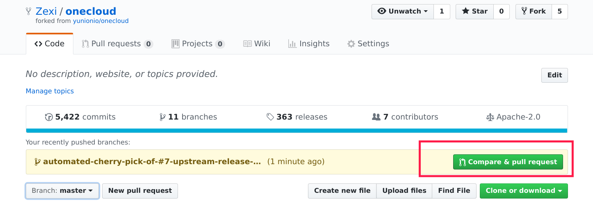

开发贡献
介绍如何搭建开发环境，编译组件以及提交代码的流程
安装 Go
Golang 版本要求 1.12 以上
安装go环境参考: Install doc
编译 onecloud 组件
Fork 仓库
访问 https://github.com/yunionio/onecloud ，将仓库 fork 到自己的 github 用户下。
Clone 源码
git clone 前确保 GOPATH 等环境变量已经设置好，clone 你自己 fork 的仓库
$ git clone https://github.com/<your_name>/onecloud $GOPATH/src/yunion.io/x/onecloud
$ cd $GOPATH/src/yunion.io/x/onecloud
$ git remote add upstream https://github.com/yunionio/onecloud编译
# 编译所有组件
$ make
# cmd 目录下面存放着所有的组件:
$ ls cmd
...
ansibleserver climc glance keystone qcloudcli ucloudcli
awscli cloudir host lbagent region webconsole
# 可以编译cmd下制定的组件，比如：编译 region 和 host 组件
$ make cmd/region cmd/host
# 查看编译好的二进制文件
$ ls _output/bin
region host开发流程
- 从 master checkout 出 feature 或者 bugfix 分支
# checkout 新分支
$ git fetch upstream --tags
$ git checkout -b feature/implement-x upstream/master- 在新的分支上进行开发
- 开发完成后，进行提交PR前的准备操作
$ git fetch upstream # 同步远程 upstream master 代码
$ git rebase upstream/master # 有冲突则解决冲突
$ git push origin feature/implement-x # push 分支到自己的 repo- 在GitHub的Web界面完成提交PR的流程

- 提完 PR 后请求相关开发人员 review，并设置Labels来表明提交的代码属于哪一个模块或者哪几个模块

- 或者通过添加评论的方式来完成上一步；评论 “/cc” 并 @ 相关人员完成设置reviewer，评论/area 并填写label完成设置Labels

所有Label都可以在issues——Labels下查询到，带area/前缀的Label均可以使用评论”/area”的形式添加
- 如果是 bugfix 或者需要合并到之前 release 分支的 feature PR，需要额外使用脚本将此PR cherry-pick 到对应的 release 分支
# 自行下载安装 github 的 cli 工具：https://github.com/github/hub
# OSX 使用: brew install hub
# Debian: sudo apt install hub
# 二进制安装: https://github.com/github/hub/releases
# 设置github的用户名
$ export GITHUB_USER=<your_username>
# 使用脚本自动 cherry-pick PR 到 release 分支
# 比如现在有一个提交的PR的编号为8，要把它合并到 release/2.8.0
$ ./scripts/cherry_pick_pull.sh upstream/release/2.8.0 8
# cherry pick 可能会出现冲突，冲突时开另外一个 terminal，解决好冲突，再输入 'y' 进行提交
$ git add xxx # 解决完冲突后
$ git am --continue
# 回到执行 cherry-pick 脚本的 terminal 输入 'y' 即可去 upstream 的 PR 页面, 就能看到自动生成的 cherry-pick PR，上面操作的PR的标题前缀就应该为：Automated cherry pick of #8，然后重复 PR review 流程合并到 release
Feedback
Was this page helpful?
Glad to hear it! Please tell us how we can improve.
Sorry to hear that. Please tell us how we can improve.
Last modified 31.07.2019: update content for docsy (3ccbedb)